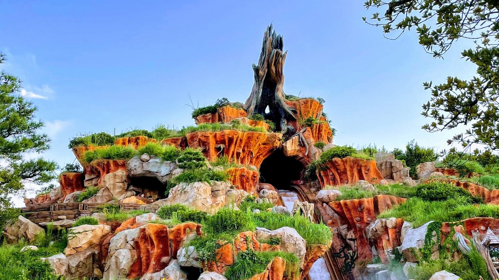
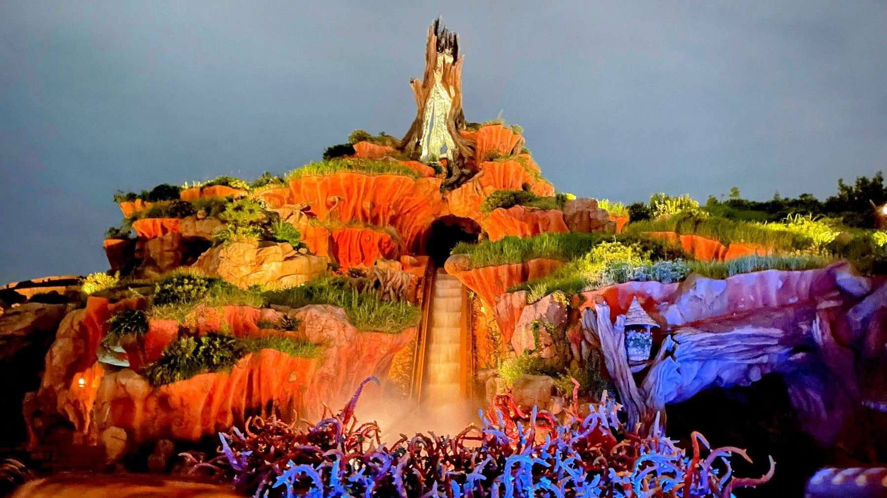

Splash Mountain
泥地に根づく知恵と、大洪水の忘れ物滝の下には泥と木の根を生かした小さな家々が並びます。水しぶきの山と、そこに暮らすクリッターたちの始まりは、同じ洪水にありました。

Ⅰ. 密造酒が生んだ大洪水（エリアの歴史）
アメリカ河の奥へ進むと、クリッターカントリーの緑の向こうに、水しぶきを上げる滝が見えてきます。小動物たちの暮らすこの山は、かつて滝のない穏やかな丘でした。
昔の名はチカピンヒル。丘の奥では、アライグマのラケッティが自家製の蒸留器で密造酒を造っていました。酒造りに夢中になっていたある日、ラケッティは蒸留器にブルーベリーを詰め込みすぎてしまいます。蒸留器は爆発し、その衝撃は近くにあったビーバーブラザーズ自慢のダムにまで及びました。せき止められていた水が一気に流れ出し、穏やかだった丘の姿は一変します。ふもとまで水があふれたこの日から、クリッターたちは丘を「スプラッシュ・マウンテン」、水しぶきの山と呼ぶようになりました。
今もこの森には、水浸しになる前のチカピンヒルを描いた一枚の絵が残されています。滝が生まれる以前の穏やかな丘と、目の前にそびえるスプラッシュ・マウンテンを見比べれば、あの日の洪水の大きさが想像できるかもしれません。
洪水のあと、開拓の途中で人間たちはこの地を去りました。あとに残ったのは、水を含んだ肥沃な泥と、人間の使っていた道具です。クリッターたちはその道具を使い、木の根を生かして家や仕事場を築きました。滝のふもとに広がる小さな国の始まりです。
壊れたダムから生まれた丸太のボート
洪水のあと、流された丸太を拾い集めたのは、ダムを築いたビーバーの兄弟、クラレンスとブリュースターでした。二匹は得意の大きな歯で丸太を削り、中をくりぬいて、小さなボートを造り上げます。そのボートに乗れば、山の中を流れる水路を巡ることができます。
かつてダムを形づくっていた木材は、こうしてスプラッシュ・マウンテンを旅する乗り物に生まれ変わりました。ゲストが乗り込む丸太のボートには、洪水とその後の歴史が刻まれているのです。
Ⅱ. うさぎどんと「ブレア（Br'er）」の正体
丸太のボートが丘の中へ入ると、家を飛び出したうさぎどんの旅が始まります。退屈な我が家をあとにして探し求めるのは「笑いの国」。行く先々で頼りになるのは、うさぎどん自身の知恵です。
旅の途中で彼を狙うのは、ずる賢い「きつねどん」と、力持ちながら少し間の抜けた「くまどん」。うさぎどんは持ち前の機転で罠を何度もかいくぐりますが、ついにきつねどんに捕まり、丘の頂上で絶体絶命の危機を迎えます。
「うさぎどん」と「ブレア（Br'er）」：直訳ではない名前の響き
ボートの中で聞こえてくる「うさぎどん」「きつねどん」「くまどん」という呼び名は、日本で親しまれてきたものです。英語ではそれぞれ Br'er Rabbit（ブレア・ラビット）、Br'er Fox（ブレア・フォックス）、Br'er Bear（ブレア・ベア）といいます。
三人の名に共通する Br'er は、アメリカ南部の方言で Brother（兄弟、お兄さん）が縮まった言葉です。
そのまま訳せば「うさぎのお兄さん」や「きつねの兄貴」といったところでしょう。日本の翻訳家たちが選んだのは、昔話の登場人物を呼ぶような「どん」という響きでした。三人が名を呼び合うたび、日本の子供たちにもその親しさが伝わります。
きつねどんの罠にかかり絶体絶命のうさぎどんは、命がけの「最後のはったり（嘘）」をつきました。「煮るなり焼くなり好きにしてくれ。でも、あそこの『茨の茂み（Briar Patch）』にだけは放り込まないでくれ！」と。間抜けな彼らは、うさぎどんが最も嫌がることをしようと、彼を茨の茂みへと投げ落とします。この落下こそが、ゲストが体験する最大傾斜45度のスリリングな急降下なのです。
うさぎである彼にとって、トゲに囲まれた茨の茂みは、生まれ育った最も安全な我が家でした。彼らの裏をかいて無事生還したうさぎどんは、あらためて、自分が元いた故郷こそが最高の「笑いの国」だったと気づきます。クリッターたちが総出で彼の帰還を歓迎し、「ジッパ・ディー・ドゥー・ダー（Zip-A-Dee-Doo-Dah）」が響くお祝いのフィナーレで、物語は幕を閉じます。
Ⅲ. ビーバーブラザーズの建築術
クラレンスとブリュースターの建設会社
クリッターカントリーの建物をよく見ると、ところどころに木を削った跡があります。それは、ビーバーブラザーズが仕事をした証です。
兄のクラレンスと弟のブリュースターは、この森で建設会社を営む腕利きの建築家。二匹は鋭い歯で木材を削り、建物や看板を造り上げてきました。
グランマ・サラのキッチンへ続く小道には、その仕事がよく残されています。外灯や柵、窓や椅子には、歯で削った跡が見つかるでしょう。柵はどこか丸みを帯び、窓枠や家具には手作りらしい不揃いな部分も残っています。人間の街のようにまっすぐ揃っていないのは、木材を削ってきたのがビーバーたちの歯だからです。
二匹の仕事場を訪ねるなら、アメリカ河のほとりへ。そこには彼らが始めた「ビーバーブラザーズのカヌー探険」があり、建設会社のオフィスも置かれています。流された丸太でボートを造り、川辺ではカヌー探険を営む。ビーバーブラザーズの仕事は、この国のあちこちに広がっています。
Ⅳ. 泥地に建てられた街（施設紹介）
ボートを降りてあたりを歩くと、あの大洪水の名残は、食事をする店や小さな看板にも見つかります。
グランマ・サラのキッチン（レストラン）
ジャコウネズミの「サラ・オズボーン（サラおばあちゃん）」が営むレストランです。彼女はクリッターで一番の料理の達人で、もともとの住み処だった自宅を開放しました。この建物は、大洪水のあとにビーバーブラザーズが、頑丈な木の根や泥を巧みに利用して建てた2階建ての巣の構造をしています。
店内にはクリッターたちの絵や家具が飾られ、今も家庭の温もりが残っています。リビングルームでくつろいでいるのは、サラおばあちゃんの夫、ザカライア・マスクラット。彼の手元には『Critter Tails』という一冊の本があります。「クリッターたちのお話」と読めそうな題名ですが、綴りは「物語」を意味する Tales ではなく、「しっぽ」を意味する Tails です。小動物たちの物語と、彼らのしっぽを掛けた言葉遊びになっています。
ラケッティのラクーンサルーン（軽食）
かつて大爆発を起こしたアライグマの「ラケッティ」のお店。彼はあの大事故のあと深く反省し、密造酒造りから完全に足を洗いました。現在は、訪れるゲストのために爽やかで安全なソフトクリームやチュロスを販売しています。看板に自分の顔を描いているのは、彼の誠実な決意の証なのです。
フート＆ハラー・ハイドアウト（ショップ跡）
ここはもともと、クリッターの子供たちが大人の目を盗んで集まる「秘密基地（ハイドアウト）」でした。店名の「フート（フクロウの鳴き真似）」と「ハラー（大声の叫び）」は、子供たちが秘密基地に入るための「合言葉」からきており、ショップとしての営業を終えた今も、子供たちの遊び場であった痕跡をその場所に残しています。
Ⅵ. ウエスタンランドからの境界線
森のどこからが小動物たちの国なのかは、隣のウエスタンランドから歩いてくるとよくわかります。
十九世紀後半のアメリカ西部を思わせるウエスタンランドには、開拓の街のにぎわいがあります。そこからビッグサンダー・マウンテンを過ぎると、道を包む緑が次第に深くなります。人間が開いた街のすぐ先に、小動物たちが自分の手で築いた森の暮らしが続いているのです。
森に響く「ハーウディドゥー」
クリッターカントリーでは、住人たちに親しまれている独特の挨拶があります。
「ハーウディドゥー！」
英語の How do you do? を、この森らしい訛りで発音した言葉です。ウエスタンランドの開拓者たちが交わす挨拶にも似ていますが、こちらは小動物たちの国ならではの響きを持っています。森の小道を歩くときには、耳を澄ませてみてください。山や建物だけでなく、言葉にもクリッターたちの暮らしぶりが表れています。
Ⅶ. 小動物たちの「スケールの魔術」
森で見かけるドアや窓、階段も看板も、街灯までもが、人間のものよりひとまわり、ふたまわり小さくできています。イマジニアたちが仕掛けた強制遠近法です。小さな家が連なる道を歩いているうちに、自分も絵本の中の住人になったように感じられるでしょう。
道端には、人間のハンターが歩いた大きなブーツの跡が残っています。置き去りにされた罠は今では暮らしの道具に、ブーツは植木鉢や看板になりました。人間が去ったあとの森を、小動物たちはこうして自分たちの手で住みよくしてきたのです。
Ⅷ. イマジニアが生んだ水の冒険
『アメリカ・シングス』から受け継がれた動物たち
カリフォルニアのディズニーランドのスプラッシュ・マウンテンは、歴史をたどると、かつてトゥモローランドにあった『アメリカ・シングス』というアトラクションに行き着きます。そこでは、数多くの動物たちがアメリカの伝統的な歌を披露していました。
1988年に『アメリカ・シングス』が幕を閉じると、そのオーディオ・アニマトロニクスの一部は、新たに建設されるスプラッシュ・マウンテンへと受け継がれました。多くの動物たちのデザインには、ウォルト・ディズニーとともに数々の作品を手がけたアニメーター、マーク・デイヴィスが関わっています。別の舞台で歌っていた動物たちは、こうして新しい物語の登場人物として再び歌い始めたのです。
Ⅸ. 世界で唯一、東京に遺された「奇跡」
スプラッシュ・マウンテンは、かつて世界の複数のディズニーパークにありました。しかし現在、その歴史は大きな転機を迎えています。
フロリダのウォルト・ディズニー・ワールドとカリフォルニアのディズニーランドでは、長年親しまれたスプラッシュ・マウンテンが営業を終え、映画『プリンセスと魔法のキス』をテーマにした「ティアナのバイユー・アドベンチャー（Tiana's Bayou Adventure）」へと生まれ変わりました。

1946年の映画『南部の唄』をもとにした、クラシックなスプラッシュ・マウンテン。名曲「ジッパ・ディー・ドゥー・ダー」を乗車中に聴けるこのアトラクションは、世界で唯一、東京ディズニーランドだけに遺されることになったのです。
東京の丘に耳を傾けると、今も丸太のボートからうさぎどんたちの歌が聞こえてきます。海の向こうで物語が新しいものに変わった今も、この森に残る声です。